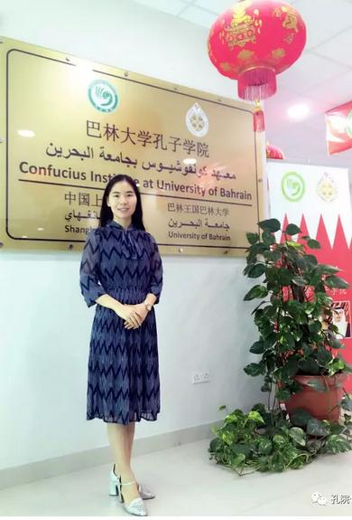
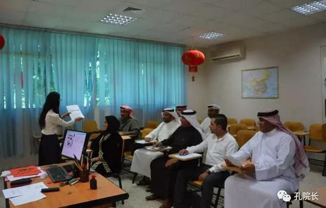
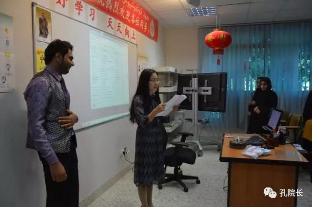
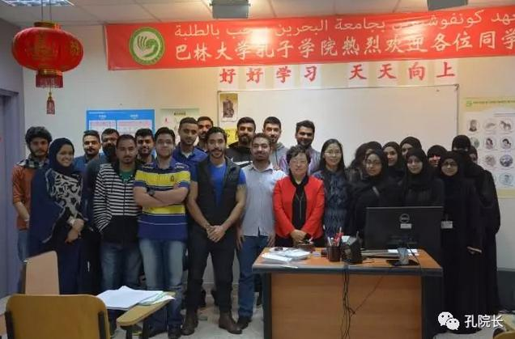
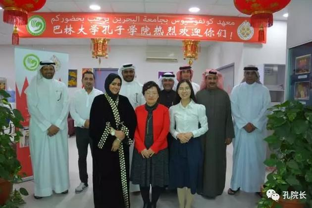

每日一篇——志愿者风采/ 宋亚丽：在巴林沙漠上浇灌美丽的汉语之花
 621
621
纤瘦、素雅、笑容清新，这是大多数人见到宋亚丽老师的第一印象。同时很难相信这样一个纤弱的女生，可以毅然走出国门，来到距离祖国数千公里之外的巴林，成为一名汉语教师。也就是这样一个纤弱的女生在巴林这片沙漠上浇灌出了更多美丽的汉语之花。

宋亚丽老师
“巴林”这是个总被中国朋友误会为“巴黎”的名字，这是个被波斯湾静静拥在怀里的神秘国度。由于两国相隔遥远，几乎所有中国人对巴林的印象都是：茫茫的大漠，炎热的气候，被黑袍面纱裹得严严实实的妇女们。这一切都难免让第一次来巴林的人觉得不安。
俯瞰巴林
巴林海景房
但是当宋老师2016年八月第一次来到巴林，飞机上俯瞰下去，灯海闪烁，巴林的夜晚美到难以用语言形容。虽然早知道巴林属热带沙漠性气候，将近48摄氏度的地面温度，还是“热情”地让人印象深刻。新的工作，新的生活即将在这个美丽的岛国开始，未知的一切总是让人格外激动。
巴林地标
巴林这样一片热情的土地，用极大的包容性接纳了宋老师。环境优雅的小区，准备齐全的家电，如果愿意，还能买到各种各样的中国调料。不安，在平静温馨的日子里不知不觉地烟消云散。生活就这样平稳的步入正轨。而工作伊始，宋老师就迅速完成了从学生到老师的身份转变。在宋老师眼里，教学实际上是一通百通的，无论是教哪门课，和学生的交流沟通都是一样的，而掌握了学生的心理状态，也就掌握了教学的第一要素。院长的引导，同事的帮助，前辈留下的资源都帮助宋老师平静自信的站在巴林的讲台上，开始了这段温馨的“汉语之旅”。

上课，我们是认真的
在大部分人的刻板印象里，阿拉伯的学生是保守的，但在宋老师眼里无论是中国学生还是巴林学生实际上都是一样的，如果教师能够认真观察自己的学生，总结和学生的相处之道，调整沟通方式，那么无论哪个地方的学生并没有什么不同。因为做到了认真分析学情，宋老师更加理解包容自己的学生，因此她的学生大都活泼可爱，遇到问题也会大大方方地去询问这个时刻微笑着的中国老师。
当然只有微笑是不够的，宋老师备课的灯光点缀过无数个巴林的夜晚。在长期的备课中，她也总结出了实用的经验。首先，在上一门新课之前，不要急于开始制作课件，而是梳理自己的思路，对这门课进行宏观的设计。如同建筑，要先将框架建全。随后再增砖添瓦，补充细节。这样的备课方式，不但可以避免因为不清楚而产生的内容混乱，也可以大幅减小备课压力。如同画画讲究“胸有成竹”，备课更要做到心中有数。丰富有趣的教学内容，平和耐心的教学态度，这样的课堂又怎么会不受学生的欢迎呢？
巴林的学生也以自己的方式表达着对宋老师的喜爱，在学期即将结束的课堂上。学生们悄悄组织了一场对宋老师的感谢活动。被捂着眼睛送到教室门口的宋老师睁开双眼，惊喜地看到所有的学生们站成了一个“心”的形状，这颗特别的心既代表着宋老师对学生们的爱心，也是学生们的感恩之心。讲台上的蛋糕散发着甜蜜的香气，如同宋老师的心情，甜美而幸福。
一起切蛋糕吧
惊喜还在继续，热爱汉语的穆朋同学开始充满感情的朗诵全体学生写给宋老师的感谢信“we the students of Chinese 101 want to express our thankfulness to your wonderful support and teaching skills that helped us to learn Chinese easily….xie xie ni !”。

阅读学生的感谢信
我的漂亮老师

师生温馨合影
一封感谢信，一张栩栩如生的肖像画，一幅精心写着宋老师阿语名字的小条幅，一张微笑的合影，惊喜不断，感动不断，教学的意义也许就在这一张张真诚微笑的脸庞里。这不仅是学生们在感激一个用心教学的汉语老师，更是宋老师突出教学成果的体现。

政府班结业合影
她的另一个学生玉兰则在hsk1考试中取得了193分的超高分数，而hsk1的总分为200分。虽然对玉兰能够通过考试早有信心，但这样的高分实在让人喜出望外。玉兰的高分无异于一颗惊喜彩蛋，灿烂了自己更鼓舞了别人。
如今宋老师所带学生已近200人。她将汉语的种子种在学生的心田，然后精心呵护着这种子一路成长，直到汉语之花盛开。她说“海阔凭鱼跃，天高任鸟飞”，汉语的世界海阔天空，每一个学习汉语的巴林学生都可以自由飞翔。
作者简介：
程雨萌，巴林大学孔子学院汉语教师志愿者。狮子座，爱吃，喜静，积极阳光。相信所有曾经经历和正在经历的都是命运最好的安排。